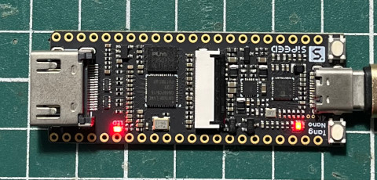
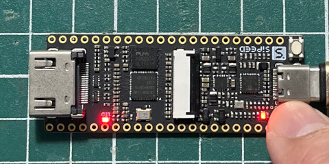

main.vhd
library ieee;
use ieee.std_logic_1164.all;
entity main is
port(
btn : in bit;
led : out bit
);
end main;
architecture logic of main is
begin
led <= not btn;
end logic;
main.cst
IO_LOC "led" 10; IO_LOC "btn" 14;
完成

